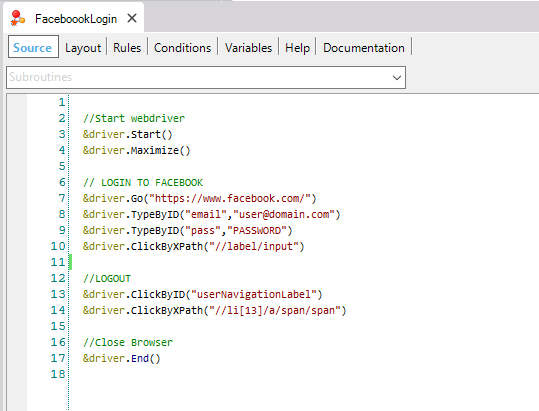
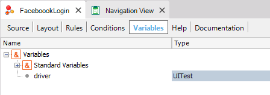
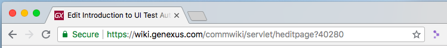
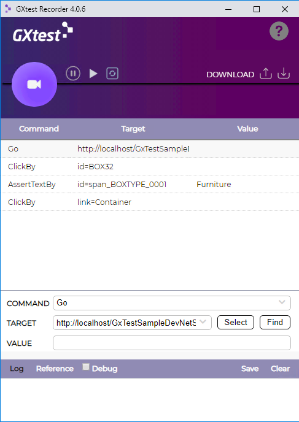

UI testing of Web Apps is available using native GeneXus programming through a specific object in the GeneXus IDE called Web UI Test object. So, a typical test case will look something like this:  The variable named &driver is autogenerated and provides automation capabilities over the desired browser using the UITest External Object.  This External Object (UITest) is responsible for implementing the adaptation layer over Web Driver Protocol. Each GXtest command is designed to work on top of the protocol, using native .NET and Java Web Driver implementations in order to run a test over any Selenium Server. This implementation enables the GeneXus language to take advantage of this standard inside the Knowledge Base. Creating TestsManually creating a test case on a command-by-command basis may take a long time; also, the user will need to know how to target HTML elements. For this reason, GXtest provides recording capabilities using GXtest Chrome Extension Recorder. With this extension installed on your Chrome, you can navigate through the web app you want to test while capturing the test steps and validations:  Once you've finished recording, you will be able to test your flow directly on the browser, before importing it into your Knowledge Base to edit it.  Typical editing actions after recordings include: - Adding Assertions. - Adding test iterations to use different data inputs and outputs. - Adding/retrieving stored data validations using For Each statements or data providers. - Debugging test cases on different remote browsers (docker/cloud). - Scheduling test executions on Jenkins or other CI servers. |
| Backlinks | |
| Toc:GXtest v4 | Category:Web UI Test object |